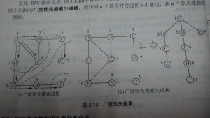

DFS遍历（深度优先搜索）
算法思想：对一个无向连通图，在访问图中某一起始顶点v之后，由v出发，访问它的某一邻接顶点w1，再从w1出发，访问w1的某一邻接但还没有访问过的顶点w2，然后从w2出发，依次类推地访问；。。。。。。；直到到达的顶点的所有邻接顶点都被访问过了，然后回退一步，看看上一个访问的顶点还有没有没有访问过的邻接点，如果有，则访问此顶点，如果没有，继续回退，直到退到起始点v为止。重复上述过程，直到所有顶点都被访问到了为止。
用图片说话

图2.1描述的是对于图2.1.a从A点开始进行DFS搜索，实线表示递进，虚线表示回归 。2.1.c是递归遍历之后对应的二叉树。
DFS
DFS的伪代码表示
该遍历需要一个标记数组visited[i]，记录哪些点已经被访问，哪些点没有被访问，n代表顶点数，m代表边数。
如果用邻接表来存储图结构，DGS的实现伪代码为
void DFS(顶点i)
{
visited[i] = 1;
p = 顶点i的边链表表头指针；
while(p != NULL)
{
//假设指针p所指向的边节点所表示的边中，另一个顶点为顶点j
if(visited[j] == 0)
{
//这里写递归搜索前的准备工作
DFS(顶点j);
//dfs的回退位置，要处理的在这里写
}
p = p->next;//移向下一个节点
}
}
可以看出，在邻接表的存储下，DFS的时间复杂度为： O(n + 2 * m)。
如果用邻接矩阵存储图结构，DFS的实现算法为
void DFS(顶点i)
{
visited[i] = 1;
for(int j = 0;j < n;j++)
{
if(mapp[i][j] == 1 && visited[j] == 0)
{
//递归前的准备工作
DFS(j);
//回归后的各种操作
}
}
}
可以看出，如果采用邻接矩阵存储图结构，时间复杂度为：O(n * n)。
不过要注意，DFS是利用了栈的原理，如果递归的太多的话容易超时，所以在这种情况下，可以选择广度优先搜索BFS。
BFS遍历（广度优先搜索）
广度优先搜索是一个分层的搜索过程，没有回退过程，是非递归的。
算法思想对一个无向连通图，在访问图中某一起始顶点v后，有v出发，依次访问v的所有未访问过的邻接顶点w1,w2,w3,w4......，然后再顺序访问w1,w2,w,3,w4....的所有还未访问过的邻接顶点，再从这些顶点出发，进行下一轮的访问进队列。。。。。。
可以看出，BFS是一个循环的过程。
图片说话：

BFS的伪代码表示
如果图的存储为邻接链表的形式
void BFS(顶点i)//从顶点进行广度优先搜索
{
visited[i] = 1;//将顶点i的访问标记为已访问
//将顶点i进队列
while(/*队列不为空*/)
{
//取出队列的顶点，设为k
//p = 顶点k的边表表头指针
while(/*p不为空*/)
{
//设指针p所指向的边结点所表示的边的另一个顶点为顶点i
if(/*顶点j未被访问过*/)
{
//将顶点j的访问标志置为1，并将顶点j入队列
}
p = p->next;
}
}
}
如果图的存储是邻接矩阵，那么BFS的伪代码表示为
void BFS(/*顶点i*/)
{
visited[i] = 1;
//顶点进入队列
while(/*队列不为空*/)
{
//取出队列头的顶点，设为k
for(j = 0;j < n;j++)
{
//j是k的邻接顶点，并且j没有被访问过
if(edge[k][j] == 1 && !visited[k][j])
{
//将顶点j标记为已访问，并且将j入队列
}
}
}
}